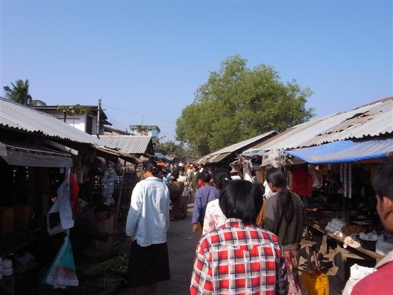
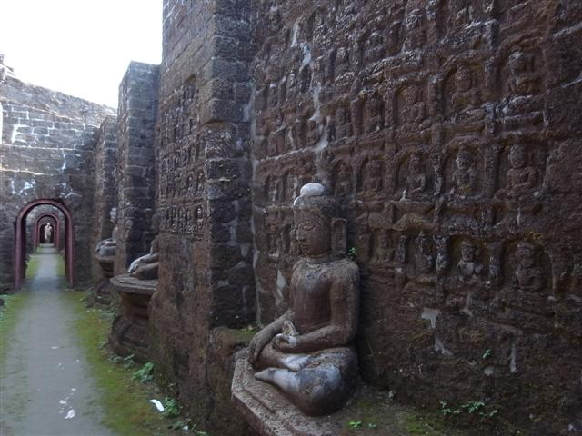
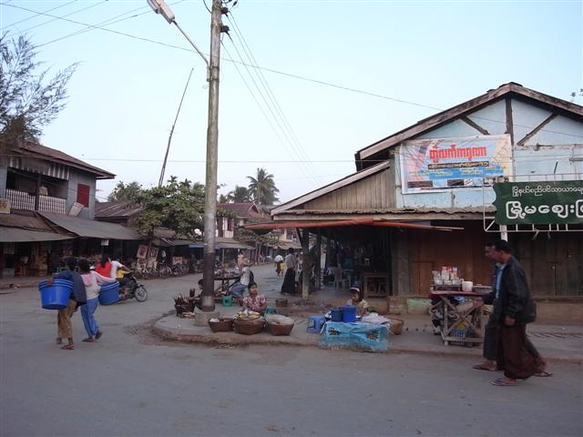

早上起來洗澡，洗冷水澡原來也不是很難受。早餐時又再遇見 Lin 和 Jim，Jim 精神好多了，他們繼續為小事而爭吵，很搞笑。
從旅館租了一輛單車，到市場走了一轉，買了一頂帽，先看看 Mrauk U Palace 遺跡，之後去東面和南面的地方。由 Sakyamanaung Paya 附近的路一直往東走，第一個到達的是 Kothaung Temple。
我覺得 Kothaung Temple 是這裏最宏偉的古蹟，牆外有很多石雕，但是大部分都崩毀了，所以有很多新簇簇的「修復品」。裏面有兩層，第一層有通道圍著四邊，通道的牆壁上滿是雕刻。赤腳在通道行，行到沒陽光的地方，濕漉漉，地上和牆上長了青苔。
頂層像個祭台。正門樓梯口旁坐著一個少年，販賣著他手製的石雕。Kothaugn Temple 旁邊亦有些攤檔，售賣介紹 Mrauk U 的文獻影印本，以及一些手造的織品。我身上的 Kyat 所剩無幾，我用美元買了些東西，找回 Kyat，此時此地要 1 USD 換 700 Kyat。基本上，一到 Sittwe 已經貴了很多，Mrauk U 就更貴，沒有在之前換多一點，真失策。
然後踏到南面的 Peisi Daung Paya，Peisi Daung 很細小，只在個小山頭上，簡直像個廢墟。小小的地方，有五個佛像，四個佛像分別向外向著四個方向，然後中間的上方，又擺放著一個佛像。
踏單車過穚到南邊，經過 Shwetaung Paya，旅遊書竟然說由 Sittwe 到 Mrauk U 途中也能看見這個「最高的」Paya，但這個明顯不算很高很大。真正勁高勁大的，是在途中看見遠方矗立在山上的，我昨天問過 Rocky，是叫做 U Rail Taung 的 Pogoda，座落在 Pon Na Kywan Township，年齡比 Yangon 的 Shwedagon Paya 要大。
途中經過一些民居，竟然聽到有人播放著喜多郎的 Aqua。
Mrauk U 的西面都是分散著的一些廟宇，我沒怎樣逗留，踏去西北面，尋找偏遠的古蹟 Wethali，經過和市中心一河之隔的一些村莊，穿過狹小不平的道路，好像漫無目的地沿著一條不知通往什麼地方的路，經過田野、小山和一些之前未到過的 Pogoda，然後來到路的盡頭，是一所很清靜的寺院。
我踏著單車穿過門牌，一隻狗伏在地上，幸好牠沒有發怒，我停在一個空地，看見一個涼亭，裏面坐著三個僧人。我行埋去問路，但他們差不多全不懂英語，其中一個僧人能說幾個單字，我把旅遊書的地圖拿出來，說 Wethali，他看了看，指著西面，看來我走錯路了。
他們請我吃糖果，然後其中一個很開心地叫我跟他去，原來這寺院的山邊有個山洞，僧人啟動發電機，洞穴內的燈亮了，其實這些山洞真的很濕很局，我越行入山洞越窄，突然一隻蝙蝠飛出來，山洞通道的幾個彎角位存放著佛像，去到一個位置，一直斜下去，前面很黑，僧人叫了幾聲，我才聽出他是在叫「water」。再往前走，便要下水了。
折返出來，僧人做著手勢說水通到很遠的地方。我想，這裏說不定有個地下洞穴，藏著很多古物呢。我覺得都幾得意，雖然我不知自己其實去了什麼地方，但往往沒有目的和期望的結果都喜出望外。
三個僧人安坐著吃糖果，太陽開始下山，我離開，但不打算去找 Wethali，想回去 Mrauk U。經過剛才看見的一個 Stupa，看見昨晚在 Moe Cherry 吃飯的旅行團，導遊正在講解。原路經過山路，回到村落，經過 Mrauk U 北面的古蹟，當地小朋友在草地上玩耍，心想，將來這裏會變成怎樣呢？
回到市內，在市場附近買糕點吃，這裏市場關門後入夜有一檔專賣糕點，不知是什麼來的，我想是當地小吃，類似椰汁糕。
回到 Golden Star Guest House，Lin 不知和什麼人爭論，我把單車交還旅館，Lin 約我明早坐的士到碼頭。之後我在天黑前周圍走，走到碼頭，才發現超易行，不用坐的士。
在緬甸常聽到一些唸得很快很大聲的廣播，我奇怪為什麼好像周圍都有這種聲音，但又不見源頭，今天在碼頭終於見到，一位阿伯坐在三輪車，車上有個大聲公，真的是很大的大聲公，連接著一個我估是擴音機的物體，不斷地播，好不容易有停止的時間，但轉個頭又再廣播。
大約下午五時多六時，碼頭來了一艘佷長的船，和周圍的船很不同，船身長到掉頭時周圍的船都要讓路（河不是很闊），很新式，碼頭很多人來接船，我想這條船應該就是明早從這裏開出的快船了。
又回到 Pwe Wa Restaurant 吃晚餐，再吃有蝦味的咖哩蝦。（回港後上網看到這餐廳出名 butterfly fish）



郵局
Kothaung Temple

Peisi Daung Paya
Laksaykan Lake

發電機

大聲公
蝦有蝦味